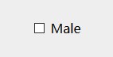
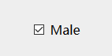
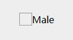
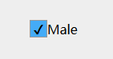

因为<label>的特性有两点 : ①不呈现任何效果, ②用户点击该标签, 浏览器能自动将焦点转移到相关的表单控件上.
<form>
<input type="checkbox" name="sex" id="male" />
<label for="male">Male</label>
</form>所以正适合用于修改input的样式.
进入正文, 修改input[type="checkbox"]的样式
默认样式: 选定前选定后;
/*选定前*/
#male + label::before{ /*设置label标签的伪元素*/
content: "\a0"; /*不换行空格*/
display: inline-block;
width: 20px;
height: 20px;
border: 1px solid #999;
}
/*选定时*/
#male:checked + label::before{
content: "\2714"; /*√*/
text-align: center;
background-color: rgb(68, 171, 247);
}
/*取消默认框*/
#male{
display: none;
}设置后的样式：选定前选定后;
本文只是简单描述修改input[type="checkbox"]样式的原理，其他不足之处请谅解